46 منشوراً
أرشيف 2024
كانون الأول 2024
تشرين الثاني 2024
تشرين الأول 2024
أيلول 2024
آب 2024
تموز 2024
- مقالات · كنز معرفي: كتب د. رشا نوفل في نظم المعلومات الجغرافية
-
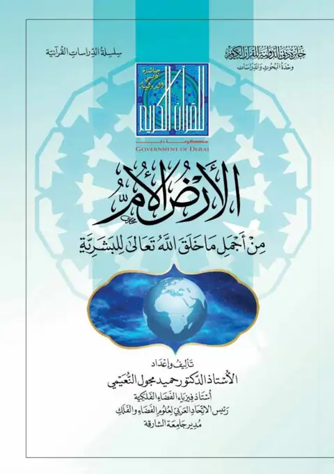
أخبار الاتحاد · الأرض الأم: من أجمل ما خلق الله تعالى للبشرية -
 محاضرات وفعاليات · نُقرب الفضاء إليك
محاضرات وفعاليات · نُقرب الفضاء إليك
-
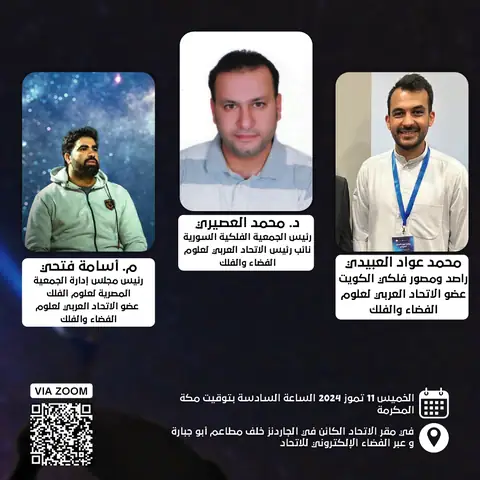
محاضرات وفعاليات · الملتقى الفلكي العربي 2024 -
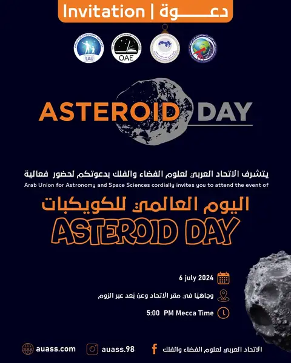
محاضرات وفعاليات · دعوة لحضور الفعالية السنوية ليوم الكويكبات العالمي -
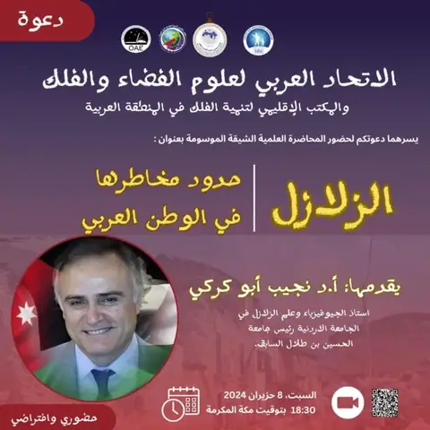
محاضرات وفعاليات · دعوة لحضور محاضرة: الزلازل وحدود مخاطرها في الوطن العربي - محاضرات وفعاليات · محاضرة الزلازل
-
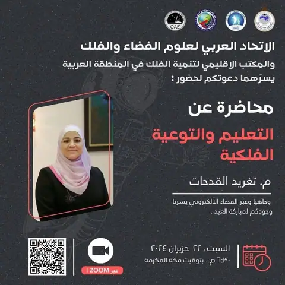
محاضرات وفعاليات · دعوة لجلسة مباركة العيد ومحاضرة: التعليم والتوعية الفلكية - محاضرات وفعاليات · محاضرة التعليم والتوعية الفلكية
أيار 2024
-
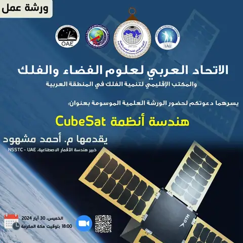
محاضرات وفعاليات · دعوة لحضور ورشة متخصصة في Cube-sat -
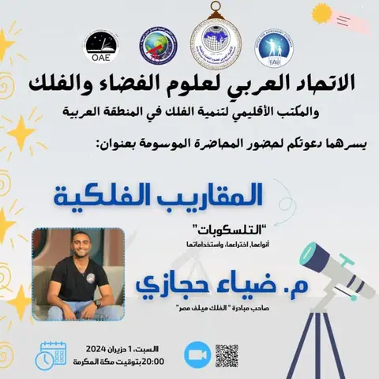
محاضرات وفعاليات · دعوة لحضور محاضرة مبسطة: المقاريب الفلكية (التلسكوبات) -
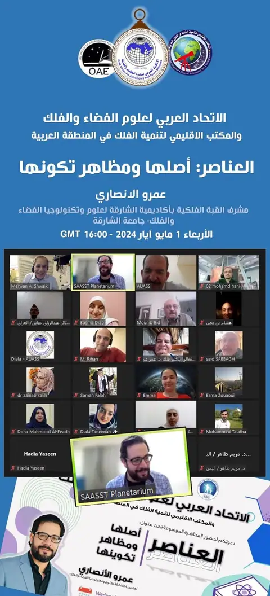
محاضرات وفعاليات · محاضرة “العناصر أصلها ومظاهر تكوينها” -
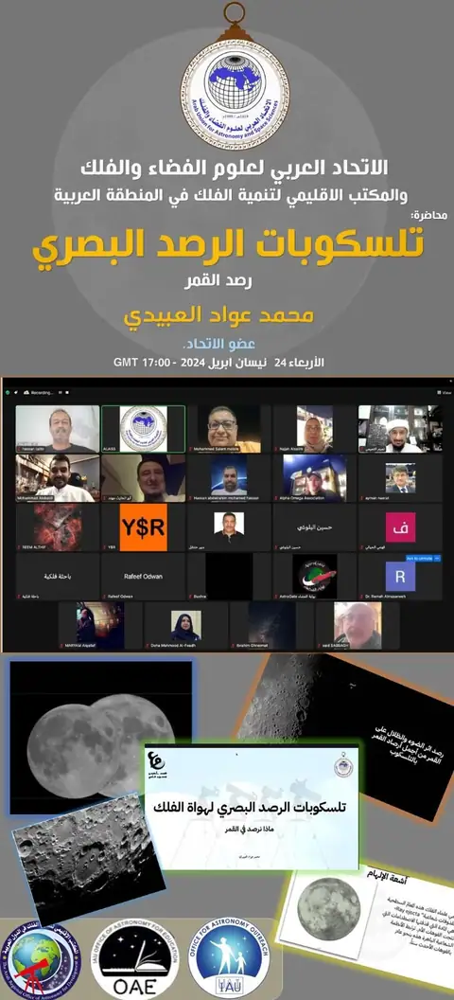
محاضرات وفعاليات · محاضرة تلسكوبات الرصد البصري “رصد القمر” -
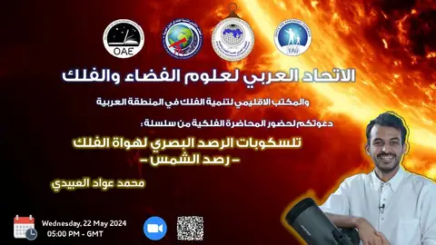
محاضرات وفعاليات · دعوة لحضور محاضرة تلسكوبات الرصد البصري “رصد الشمس” -
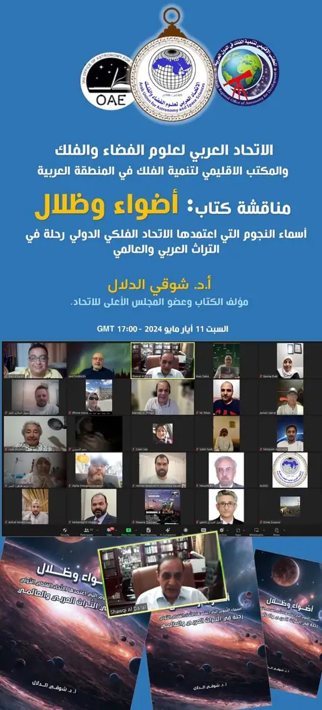
محاضرات وفعاليات · مناقشة كتاب “أضواء وظلال” -
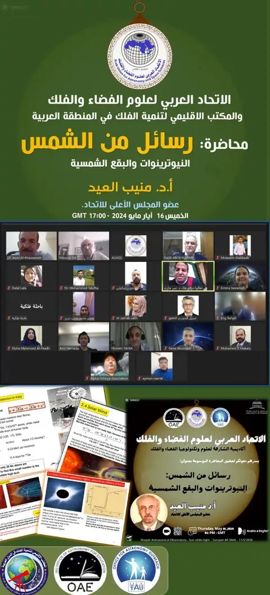
محاضرات وفعاليات · محاضرة رسائل من الشمس - أخبار الاتحاد · توقيع اتفاقية تاريخية بين الاتحاد العربي لعلوم الفضاء والفلك (AUASS) والإدارة الوطنية الصينية للفضاء (CNSA) في مجال استكشاف الفضاء العميق
-
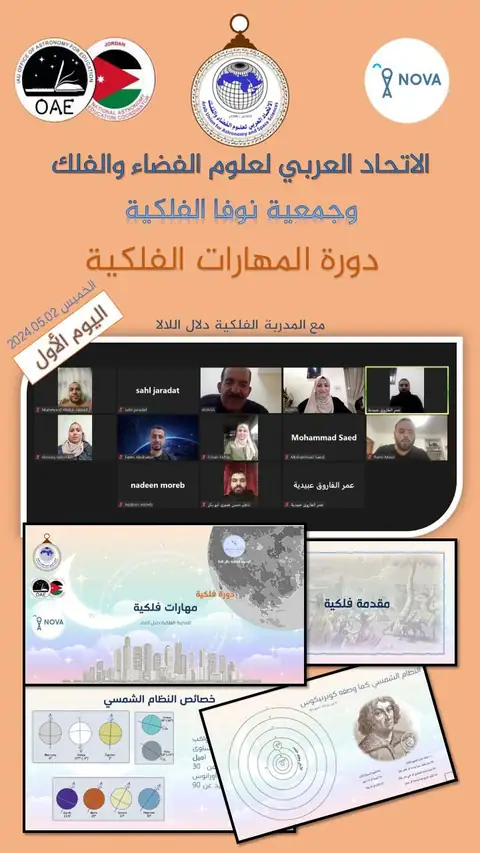
محاضرات وفعاليات · أمين عام الاتحاد العربي لعلوم الفضاء والفلك يفتتح دورة المهارات الفلكية لجمعية نوفا الفلكية في فلسطين
نيسان 2024
-
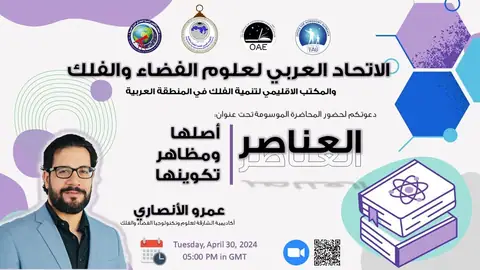
محاضرات وفعاليات · دعوة لحضور محاضرة بعنوان العناصر أصلها ومظاهر تكوينها - أخبار الاتحاد · زيارة الوفد الصيني إلى المملكة الأردنية بدعوة من الاتحاد العربي لعلوم الفضاء والفلك
-
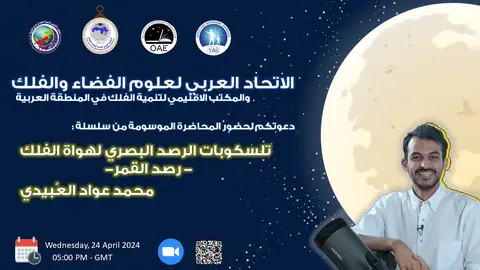
محاضرات وفعاليات · دعوة لحضور محاضرة ”تلسكوبات الرصد البصري لهواة الفلك (3)” -
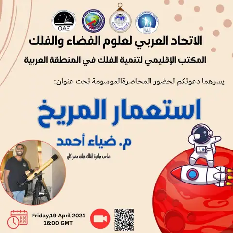
محاضرات وفعاليات · دعوة لحضور محاضرة “استعمار المريخ” -
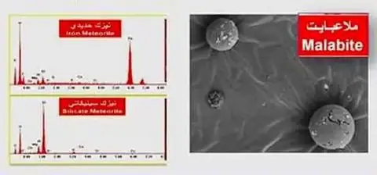
أخبار علمية · البروفيسور الأردني ملاعبة يكتشف قطعا نيزكية حديدية وسليكاتية جديدة ونادرة في شمال إسبانيا -
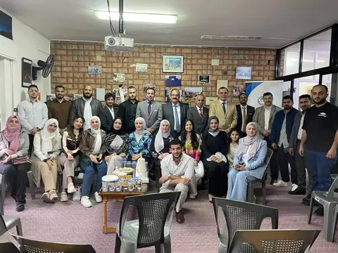
أخبار الاتحاد · الاتحاد العربي لعلوم الفضاء والفلك يستقبل المهنئين بمناسبة عيد الفطر -
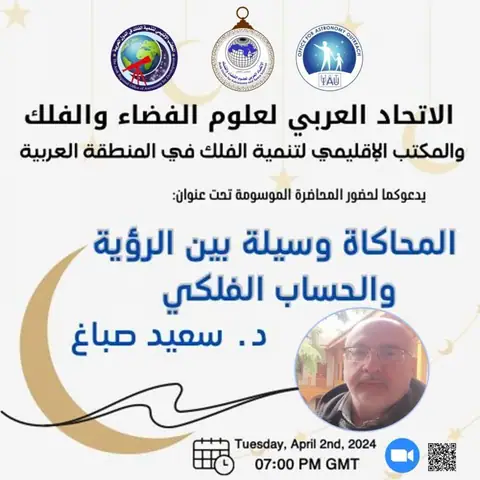
محاضرات وفعاليات · دعوة لحضور محاضرة تحت عنوان: المحاكاة وسيلة بين الرؤية والحساب الفلكي -
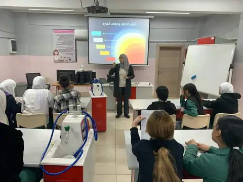
محاضرات وفعاليات · ورشة فلكية بعنوان ”حياة النجوم” يقدمها الاتحاد في مدرسة إناث مخيم عمان الإعدادية الأولى -
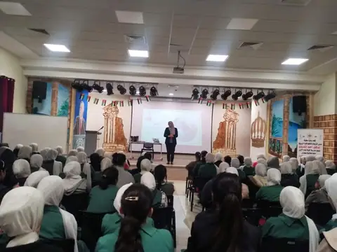
محاضرات وفعاليات · المدربة الفلكية دلال اللالا من الاتحاد العربي لعلوم الفضاء والفلك تلقي محاضرة في مدرسة خولة بنت الأزور الأساسية للبنات -لواء الرصيفة
آذار 2024
كانون الثاني 2024
-
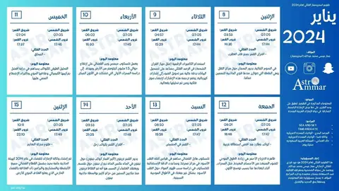
أخبار علمية · الرزنامة الفلكية 2024 إعداد الفلكي عمار عيسى محمد عبدالله -
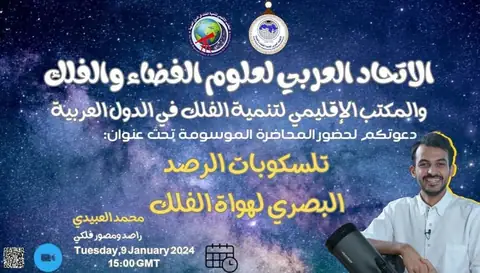
محاضرات وفعاليات · دعوة لحضور محاضرة: “تلسكوبات الرصد البصري لهواة الفلك” -
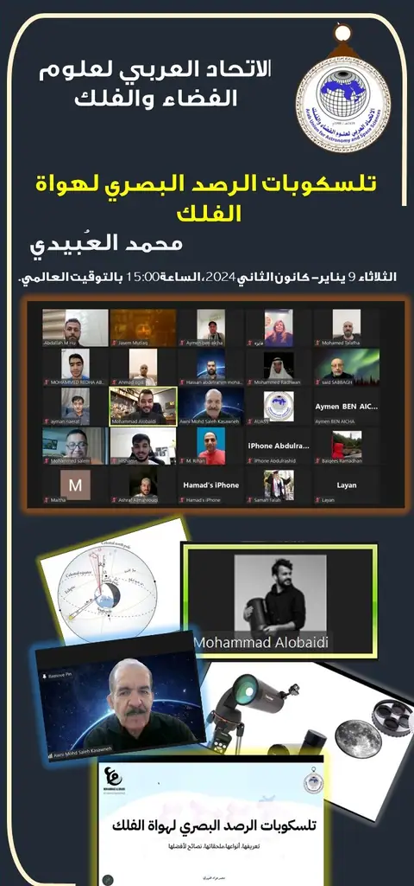
محاضرات وفعاليات · محاضرة 9 يناير 2024 – الأستاذ محمد العُبيدي (تلسكوبات الرصد البصري لهواة الفلك) -
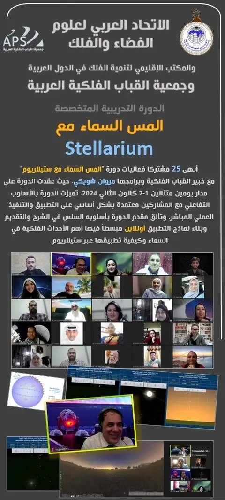
محاضرات وفعاليات · الاتحاد العربي لعلوم الفضاء والفلك يفتتح العام الجديد ٢٠٢٤ بعقد الدورة الأولى بالتعاون مع جمعية القباب الفلكية تحت عنوان (المس السماء) - أخبار الاتحاد · مقتطفات من نشاطات الاتحاد العربي لعلوم الفضاء والفلك خلال عام ٢٠٢٣م
لا توجد منشورات من هذا النوع في هذه السنة.